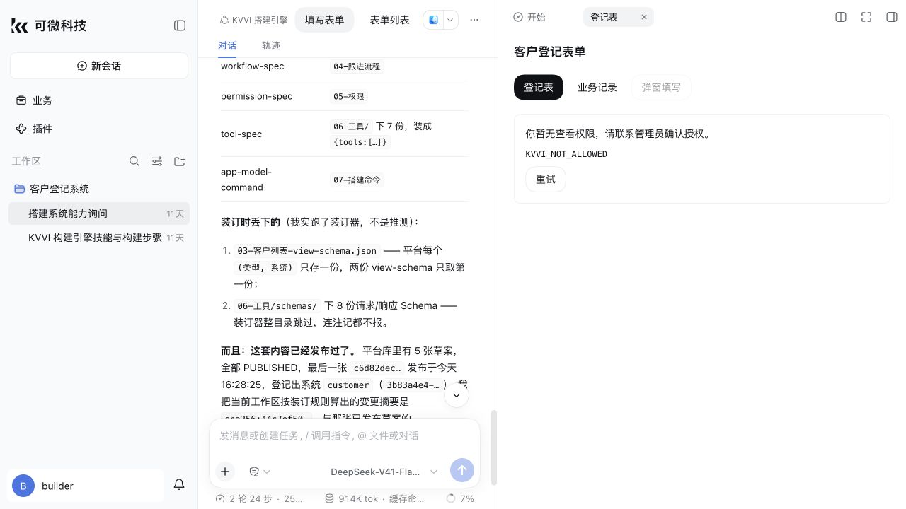
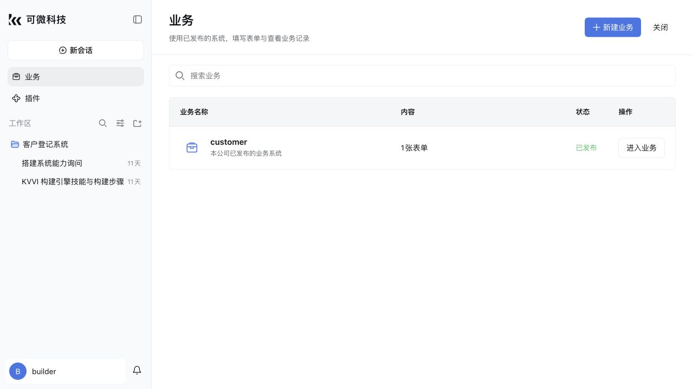
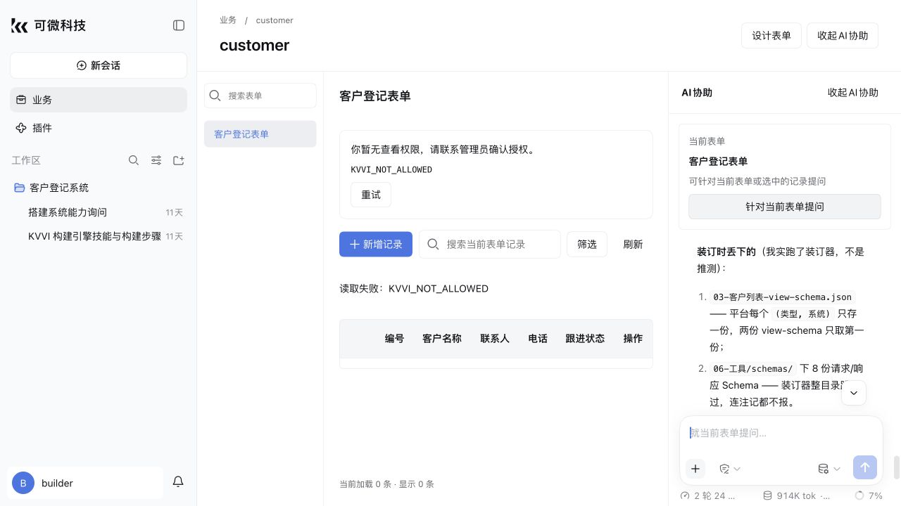
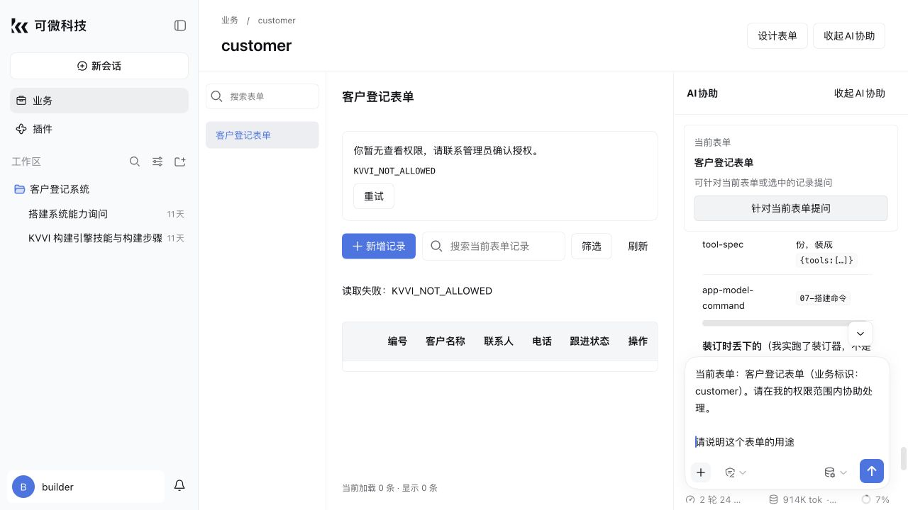
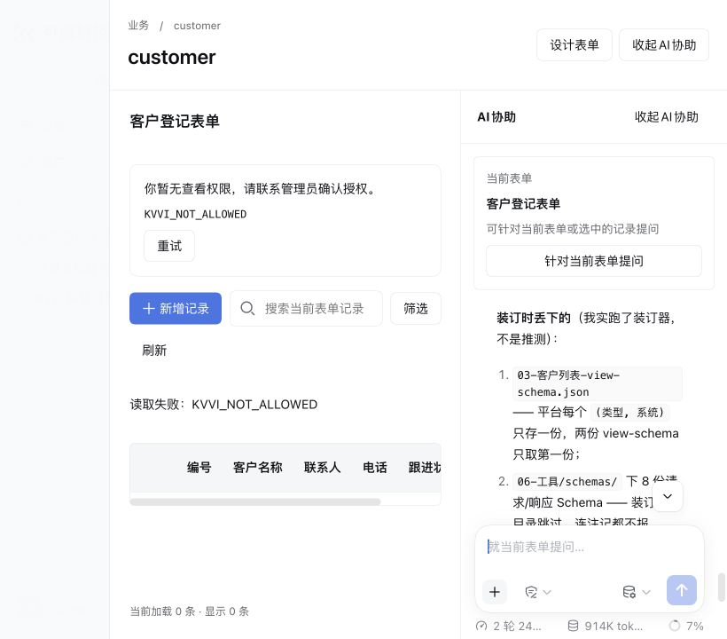

2026-10-08 · fork 0d8efbe · 本地 7500 已更新。范围为已存在的业务功能与已确认 7506 设计对齐；不增加业务重命名、删除、多页面或看板/报表后台。
.kvvi-system.json，与当前已发布业务核对。中文工作区不再因 customer 名称差异而丢失入口。无效、截断、无权读取或未知标记停止自动匹配。16 个测试文件、190 项定向回归通过。客户端及页面构建通过；提交检查包含代码规范、空白、第三方清单与 vendor guard。独立只读审查发现的草稿引用丢失和连接取消问题均修正。
fork 导出 183 个文件及 8 条删除记录；从干净上游基线重建后逐字节一致；改造点登记与指纹检查通过。
7500 使用现有 builder 登录验收：快捷入口、自动关联、真实表单名称、AI 卡片、可见上下文插入、保留文字草稿、可发送状态和 820px 窗口已查看。未发送测试问题，测试草稿已清空。builder 的 KVVI_NOT_ALLOWED 是后台权限拒绝；本次未扩大数据权限，也未将这些页面当作员工读写闭环的验收。
验证期间继续构建曾触发原框架热更新中断旧页面；最终构建完成后重启服务、重新载入并复查页面，后续无新增页面错误。本轮不包含框架热更新生命周期修复。





直接业务重命名/删除，多页面目录及看板/报表仍未交付。此次本地修复、190 项测试和原型展示均不代表私有化交付或业务闭环完成。